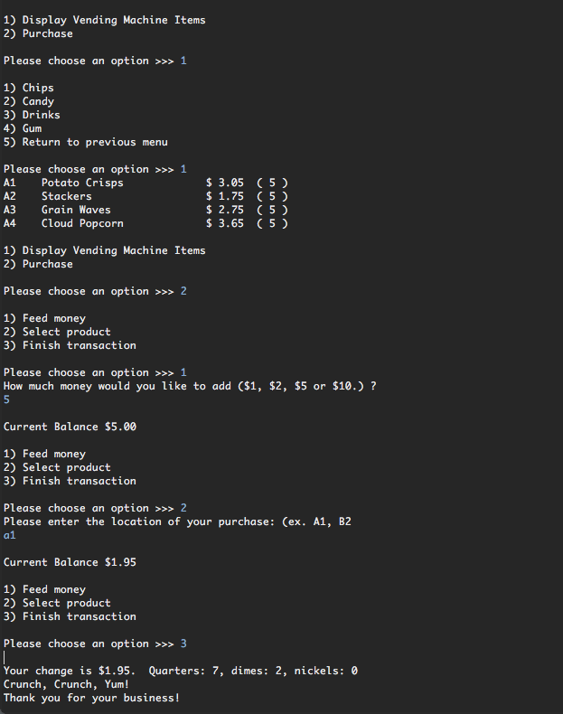
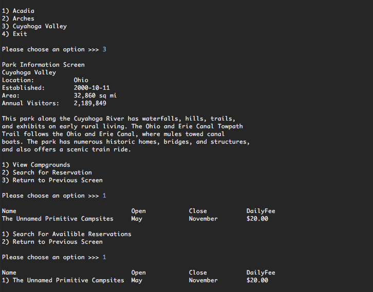
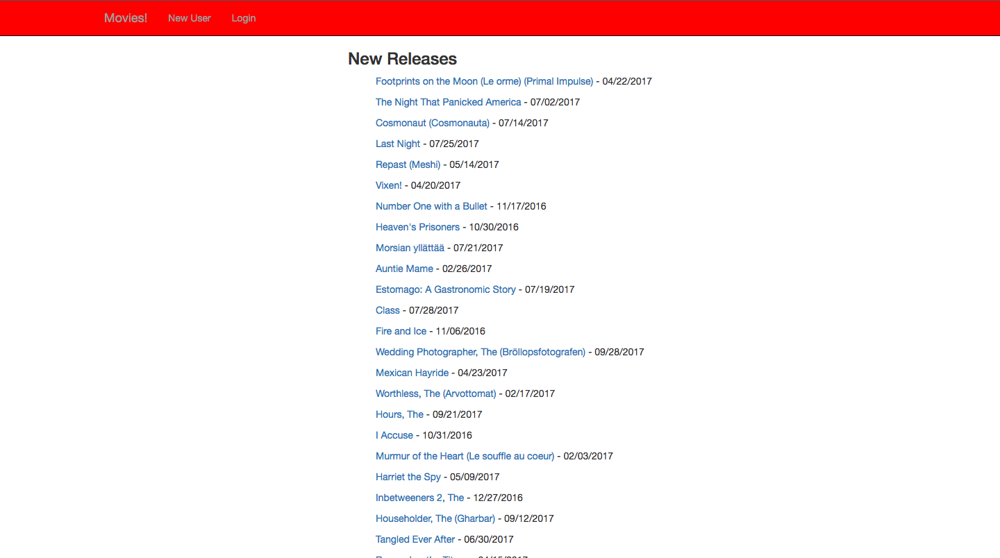
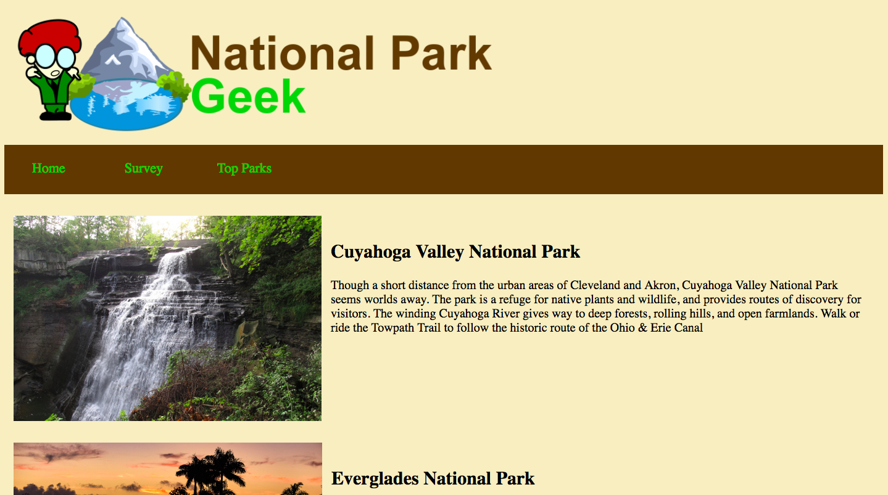

-

×
Module 1 Capstone - VendingMachine
(source) A command-line application using Java designed to load inventory from a CSV file, process a customer’s choices and keep a sales log file for inventory purposes. -

Module 2 Capstone - Parks reservation
(source) A command-line application using Java and PostgreSQL to view parks, their campgrounds, and reserve campsites. Reservations were checked against existing reservations and then stored in a database. -

Movies!
(site) A small site that I used to pull movie data from a Postgresql database to display in list and detail views. -

Module 3 Capstone: National Parks
(source) (site) A web based application using Java, PostgreSQL, Spring Web MVC and Tomcat. This application took user requests to view detailed park descriptions where users could determine measurement output that would be stored in their session. Users were able to complete a park survey that was stored to a database.